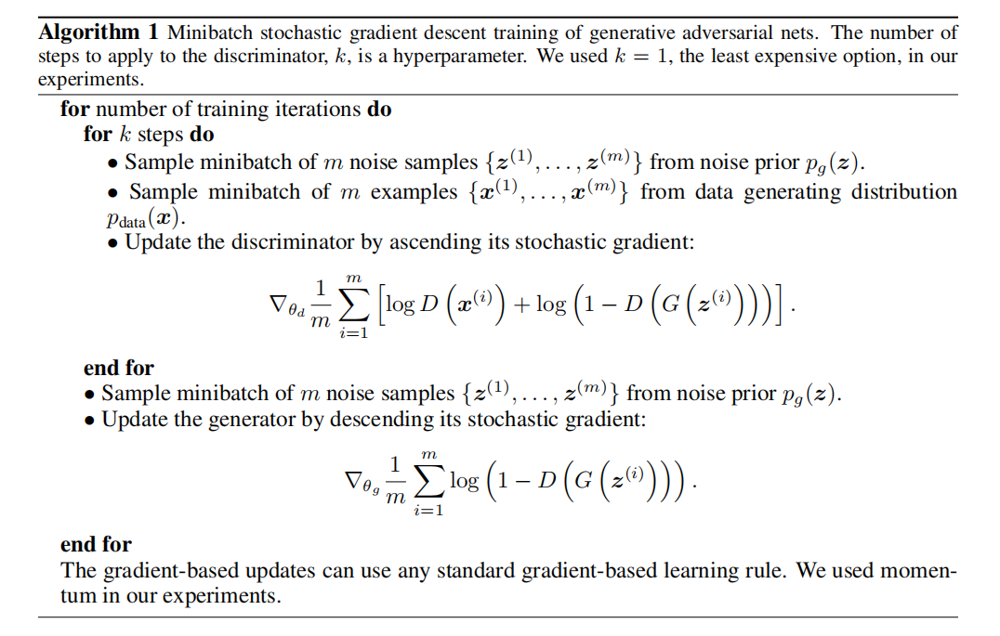
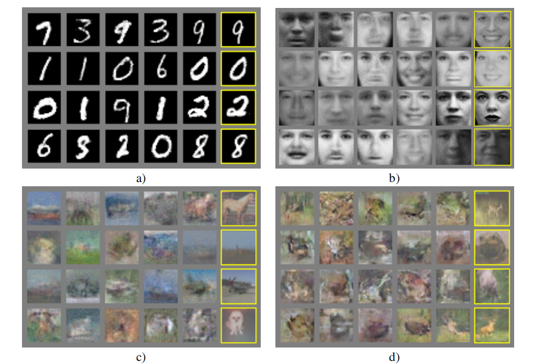

最初版本的GAN
GAN是一种新的基于深度学习的生成模型框架。他采用对抗训练的思路，同时训练一个生成器G（generator）和一个判别器D（discriminator），
其中G与D都是神经网络。
生成器G负责捕获训练集的统计信息，并据此生成出新的数据；判别器D则负责判断输入神经网络的数据是否来自训练集。
二者的训练过程可以类比于一个二元博弈过程：生成器G试图生成以假乱真的数据来欺骗判别器，而判别器D则希望准确判断出数据的真假。
以上描述的训练过程其实就是对抗性训练。
当训练完成时，我们希望G足以生成出以假乱真的数据，而D则能够准确判断数据的真假。
那么在理想情况下训练完成后，将G生成的假数据输入D，D应当以50%的概率认为数据是真，以50%的概率认为数据是假。
在实际应用中，只有G起到作用，而D只是为了能够让G变得更好的一个辅助。
在计算机视觉领域，判别器并不是一个陌生的名词。比如在图像分类中，分类网络（VGG等模型）就相当于一个判断图片类别的判别器；
再比如语义分割中的FCN网络，就相当于一个判断图片上的像素属于哪一类的判别器。
而GAN中的判别器D，它需要完成的任务甚至更简单，只需判断输入数据否来自训练集这样一个二分类问题。
与D相比，G的应用就很少了，原因在于以下两点：
为描述方便，这里我们将生成模型的功能限定在生成图片上。下表反映了G与D的输入输出：
| 模型 | 输入 | 输出 |
|---|---|---|
| 生成器G | 高斯噪声 | 假图片 |
| 判别器D | 图片 | 概率，1表示真0表示假 |
\(\max\limits_D E_{x~p_{data}}[logD(x)]+E_{z~p_z}log(1-D(G(z))\)
生成器希望欺骗最优秀的判别器，因此在对抗训练过程中，G的优化目标为：\(\min\limits_G \max\limits_D E_{x~p_{data}}[logD(x)]+E_{z~p_z}log(1-D(G(z))\)
在训练时，作者提出的算法会先训练k次D再训练一次G，这是由于G积累梯度时会比较慢。训练使用常规的mini-batch SGD优化器。训练细节如下图：
下图展示了GAN的训练过程中G与D的表现。其中黑点代表\(p_{data}\)，为训练集的分布；绿线代表 \(G(z)\)的分布；蓝色虚线代表D输出的置信度分，范围[0,1]代表真假。论文中，将GAN在一些数据集上做了对比生成图片质量的实验。下图中，最后一列是GAN生成的结果，前面几列是之前的生成模型结果。 可以看到，很明显GAN生成图像的质量优于之前的生成模型。

原始GAN在训练时会遇到一种称为mode collapse的问题，即不论输入G的是什么，G都会产生同一张假图片，这就导致了
生成结果的多样性欠缺。这是由于D与G更新不同步 导致。如果D更新太快，会导致GAN无法收敛，G生成的假图片被D一眼看穿；
如果G更新太快，则会发生mode collapse问题，一个优秀的G与一个D竞争会导致G自满而不再进步。
后面WGAN的论文重新设计了损失函数后，解决了GAN训练不稳定的问题。
原始GAN中生成器的输入是随机噪声。作者也提到了另外一种尝试，即将一幅真实图片输入生成器G，使其产生
基于输入图片的新图片，这被称作Conditional GAN。在后面pix2pix，CycleGAN，UGATIT的论文中，使用这种思路完成了图像翻译的任务。
由此可见GAN这一框架的功能与扩展性十分强大。